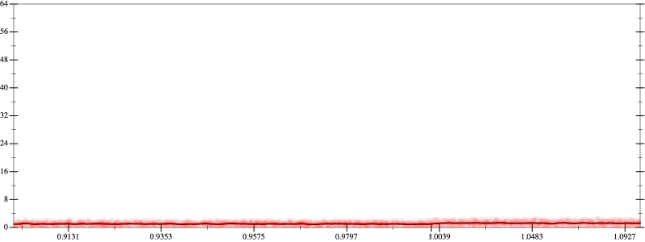
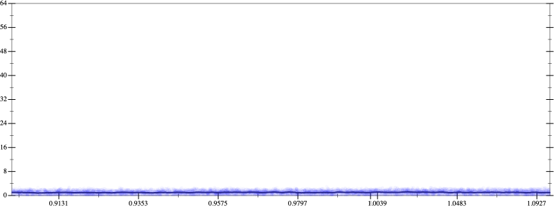
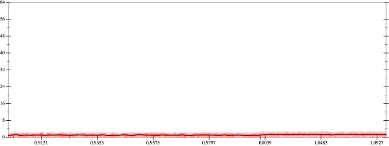
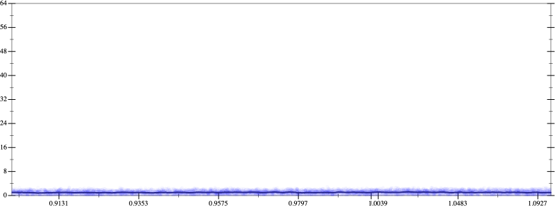

Initial program 1.1
\[\left(\left(\left(1.0 + -4.0 \cdot x\right) + 3.0 \cdot \left(x \cdot x\right)\right) + -0.666667 \cdot \left(\left(x \cdot x\right) \cdot x\right)\right) + 0.041667 \cdot \left(\left(\left(x \cdot x\right) \cdot x\right) \cdot x\right)\]
Applied simplify1.1
\[\leadsto \color{blue}{{x}^{3} \cdot \left(0.041667 \cdot x + -0.666667\right) + \left(\left(x \cdot 3.0\right) \cdot x + \left(x \cdot -4.0 + 1.0\right)\right)}\]
- Using strategy
rm Applied associate-+r+1.1
\[\leadsto {x}^{3} \cdot \left(0.041667 \cdot x + -0.666667\right) + \color{blue}{\left(\left(\left(x \cdot 3.0\right) \cdot x + x \cdot -4.0\right) + 1.0\right)}\]
Applied simplify1.0
\[\leadsto {x}^{3} \cdot \left(0.041667 \cdot x + -0.666667\right) + \left(\color{blue}{x \cdot \left(-4.0 + x \cdot 3.0\right)} + 1.0\right)\]
- Using strategy
rm Applied add-log-exp1.0
\[\leadsto \color{blue}{\log \left(e^{{x}^{3} \cdot \left(0.041667 \cdot x + -0.666667\right)}\right)} + \left(x \cdot \left(-4.0 + x \cdot 3.0\right) + 1.0\right)\]
 
